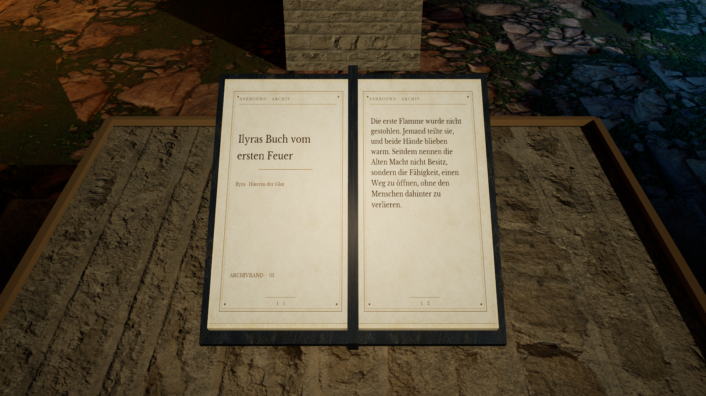

JURI / DESIGN & SOFTWARE
States. Time.Explore possibilities. Change states, observe sequences and compare variants. I build the tools to try, learn and develop those ideas further.
JavaScript runs locally in your browser. Text states and rule-based cell movement are separate models.
USE A TOOL RIGHT HERE
One image. Four spatial positions. One control, the same four points, two views. Compare what overlaps in the image and stays distinct in space.
Open the full experiment ↗ For camera debugging, technical explanations and comparing model views.
What does the code calculate? At each model time, JavaScript calculates four point positions. The left view shows their x/y coordinates; the right shows the same IDs with a tilted depth view. The calculation runs locally in your browser; movement follows a defined geometric model.
FUNCTION, MODEL, APPLICATION
What runs here?And what can it help you do? States, time and variants Set text, derive a variant, observe states and take the result as JSON. Light bodies show how the local model evolves.
For interactive explanations, variant comparison and traceable state sequences.
JavaScript runs locally in your browser. Text states and rule-based cell movement are separate models.
Open the function space ↗ Distinguish image and space Four points, two views: a projection can hide distinct spatial positions. With a time control and counterexamples.
For camera debugging, technical learning and understandable model comparisons.
Geometric model · not a measurement of unknown real processes.
Change the perspective yourself ↗ Space and movement Fly, open portals and meet residents. A native C++ prototype in Unreal Engine.
For spatial prototypes, interactive exhibitions and game concepts.
Captured in the native development version.
Open native development source ↗ New meadow in motion · GIF, 4 MB ↗
Work samples with input, counterexample and source revision ↗ TECHNICAL INTERFACES
From capability straight to code. I build and investigate the boundaries between systems.
Choose a technical area and open its function, counterexample or build definition. These examples connect seven public repositories through inspectable engineering work.
Explore the interface map ↗ SELECTED TECHNICAL WORK
Learning that stays accessible. Web application
Learn digital foundations A lesson catalog with exercises on digital skills, programming and mathematics. Browse without a required account.
Review: source inspection
Web application
Learning paths, exercises and progress A learning map, small missions and progress views for self-directed learning.
Review: source inspection
SELECTED TECHNICAL WORK
Tools with a clear purpose. Desktop project
Manage credentials locally A Windows project with published source, a desktop interface and a documented release process.
Review: source inspection
Browser prototype
Compare options A browser interface and JavaScript models for comparing user-entered options. The public source is a browser version.
Review: source inspection
Local browser application
States, time and variants Set text, derive a variant, observe states and take the result as JSON. Light bodies show how the local model evolves.
Review: source inspection
SELECTED TECHNICAL WORK
Graphics and spatial applications. 
Native Windows preview · in development
Explore an archive world An independent Unreal game in development: an ash valley, archive, spells and in-world books. The Windows v0.4.2 preview and current development source are separate states.
Review: source inspection
Game prototype
Explore spaces and movement in 3D An independent C++ game project for Unreal Engine. Entry points, development state and build notes accompany the code.
Review: source inspection
Game prototype
Generate procedural worlds A fantasy sandbox exploring procedural world generation and experimental dialogue systems.
Review: source inspection
Conversion in development
Tools for a role-playing game conversion OpenMW-related tools and development for a game conversion. The project builds on an external engine and game content.
Review: source inspection
SELECTED TECHNICAL WORK
Models to test and build on. Locally tested model
Run models and counterexamples Local JavaScript and Python models for perspective, source packets, optics, events and rules, with an executable test path.
Review: local model tests
npm testVisual model
Motion and state differences Interactive visualisations of motion and state differences in a browser model.
Review: source inspection
Experimental tool project
Coordinate local projects PowerShell tools and state files for experimental local task and project coordination.
Review: source inspection
Open research branch · PR #1
Compare quorum and availability An offline quorum-intersection and availability model in open PR #1. The default branch contains the java-tron fork; this model is not merged there and does not implement running TRON consensus.
Review: source inspection
Concept and interface
Explain swarm concepts and interfaces A browser interface, visualisation and concept material for drone and swarm ideas. Focus: presentation and system design.
Review: source inspection